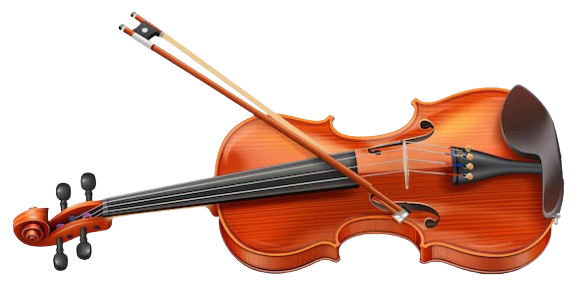

Welcome to John Schmidt Violin Building

jpschmidt44@gmail.com
Wellington, New Zealand
Class Details
Watch John's Wellington Class
Laurinburg, NC, USA
Violin Making Class
Violinmaker's Knives
Sharpening a Curved Edge
Casein Emulsion Ground
Transparent Iron Oxide Dispersions
Gouge Sharpening Jig
Luis Manfio Tutorials
Violin Mode Measurements 1
by Don Noon
Violin Mode Measurements 2
by Don Noon
What You Can Find Out by Hitting Things
by Don Noon
It Ain't Rocket Science
by Don Noon
Borman Animations
Piano Tuning
Brake Disc Hone
Selecting Tonewood
Links I Like
Wm. Slaby on fillers
Curtate Cycloid Program by Richard Thomas
UV box information by Ted White
My ground
The geometry genius of Kevin Kelly
Evan's games